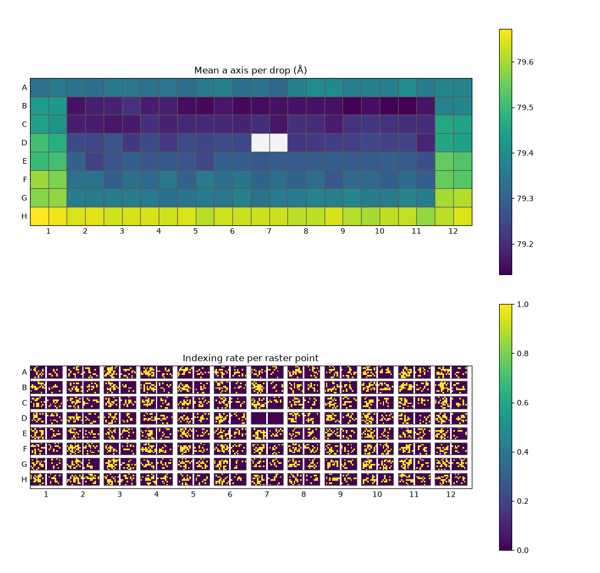

DatView manual: 2026 additions
This supplements the 2019 DatView Manual and Tutorial. The GUI, filters, partitions, groups, XML configuration and scripts described there are unchanged unless this document says otherwise.
Contents
- Installation
- datgen.py: new options and columns
- EIGER / HDF5 master files
- Sample positions and the plate plot
- Merging a selection without a stream file
- Large datasets
- Changed behaviour and compatibility
- Troubleshooting
1. Installation
git clone https://github.com/nzatsepin/DatViewCL.git
cd DatViewCL
python3 -m venv ~/venvs/datview # optional
source ~/venvs/datview/bin/activate
pip install -r requirements.txt
python datgen.py -h
- Python 3.9–3.13. Tested with numpy 2.5, matplotlib 3.11, PyQt5 5.15, pandas 3.1, h5py 3.16 and pyqtgraph 0.14 in a clean environment installed from
requirements.txt. - For merging, CrystFEL ≥ 0.10 must be on
PATHin the shell DatView is started from. Tested with 0.12.0. - Run
datview.pylocally or with X forwarding. If you only need the scripts (datgen.py,datexport.py,datplot.py -s), you can run them headless (QT_QPA_PLATFORM=offscreen).
2. datgen.py: new options and columns
datgen.py [-o OUT] [--eiger] [--h5 PATH ...] [--headers | --header NAME ...]
[--positions TABLE | --grid NX NY [--serpentine]] [existing options] files...
| Option | Effect |
|---|---|
--h5 PATH (alias of --cxi) |
Adds an HDF5 dataset from each frame's image file as a column. Scalars apply to every frame. 1D arrays are indexed by event. Read once per file. A path missing from the file gives -1, with one warning. |
--eiger |
Adds the standard DECTRIS/NXmx paths: detector_distance, beam_center_x/y, count_time, incident_wavelength, goniometer/omega. |
--headers |
Adds a column for every header/... value in the stream, i.e. every field copied with indexamajig --copy-header. |
--header NAME |
Adds one such value. |
--positions TABLE |
Adds plate/drop/raster position columns from a table (§4). |
--grid NX NY |
Adds grid_col/grid_row from the event number, for frames collected as an NX × NY raster per file. Add --serpentine for snake scans. |
New built-in columns (CrystFEL 0.10–0.12 streams):
| Column | Stream line | |
|---|---|---|
serial |
Image serial number |
|
hit |
hit |
1 if the peak search passed --min-peaks |
ntries |
n_indexing_tries |
|
pkres |
peak_resolution |
nm⁻¹ |
uaxis |
unique_axis |
|
presid |
predict_refine/final_residual |
The new columns are appended after the 2019 columns, so the column numbers in the 2019 manual still apply. Output column order: built-in, HDF5, static, concatenated, stream headers, positions, numpy file, group columns.
Byte offsets. Offsets are now byte positions measured in binary mode, so they are exact on every platform and with any file encoding. Peak and reflection offsets (pstart/pend, rstart/rend) point to the first data line and the end-of-list marker.
3. EIGER / HDF5 master files
Indexing. Use the master file in the indexamajig list. list_events (CrystFEL) or scripts/listevents.py master.h5 -o frames.lst expands it into one line per frame. Example geometry (single panel, EIGER native layout):
dim0 = %
dim1 = ss
dim2 = fs
data = /entry/data/data
Metadata columns.
python scripts/h5fields.py scan_0012_master.h5 # lists scalars and per-frame arrays
python datgen.py --eiger --h5 /entry/sample/goniometer/omega -o run.dat run.stream
Values copied into the stream at indexing time (indexamajig --copy-header=/path) are cheaper to read: use --headers instead.
Item viewer. The viewer reads frames from master files whose /entry/data holds data_000001, data_000002, … external links. The event number counts frames across the links in order. You need hdf5plugin for bitshuffle/LZ4 data. The data files must sit next to the master file, as the links are relative.
Legacy LCLS/CXI. The XTC/CXI paths, Cheetah file-name parsing (run, class, subcxi) and /LCLS/... fields are kept unchanged. They have not been retested against current LCLS formats.
4. Sample positions and the plate plot
4.1 What to record
Each frame needs: which file and frame, and where on the sample it was collected. DatView reads this from a positions table, one row per scan (or per frame), CSV or tab-separated:
| Column | Required | Meaning |
|---|---|---|
ifile |
yes | Image file of the scan (EIGER: the _master.h5). Matched by full path, then by file name, so the table still works after data are moved. |
event_start, event_end |
for several scans per file | First and last frame index (0-based, inclusive) of this scan in the file. Leave both empty if the whole file is one scan. |
event |
alternative | One row per frame. |
well |
plates | Well label, A1 … H12. Row letter A = 1. Alternatively give well_row and well_col as numbers. |
drop |
plates with >1 drop | 1, 2, … |
grid_nx, grid_ny |
rasters | Points per line (fast axis) and number of lines. |
serpentine |
rasters | yes if alternate lines run in reverse. |
grid_col, grid_row |
alternative | Explicit raster indices, with one row per frame. |
step_x_um, step_y_um, x0_um, y0_um |
optional | Raster step and origin, giving pos_x_um/pos_y_um columns. |
| any other column | optional | Copied through, e.g. plate, condition, humidity, time_open_min. |
Raster convention: frame k of a scan (counting from event_start) is at line k // grid_nx. Its point is k % grid_nx, reversed on odd lines if serpentine. grid_row 0 is the first line collected. If your scan starts at a different corner, or runs along y first, the drop is drawn mirrored or transposed. Use explicit grid_col/grid_row columns in that case.
Example: two drops per well, 20 × 15 snake raster per drop, one master file per drop:
ifile,well,drop,grid_nx,grid_ny,serpentine,step_x_um,step_y_um,plate
plate1_A1_d1_master.h5,A1,1,20,15,yes,10,10,plate1
plate1_A1_d2_master.h5,A1,2,20,15,yes,10,10,plate1
plate1_A2_d1_master.h5,A2,1,20,15,yes,10,10,plate1
Example: several drops in one master file:
ifile,event_start,event_end,well,drop,grid_nx,grid_ny,serpentine
run7_master.h5,0,299,B3,1,20,15,yes
run7_master.h5,300,599,B3,2,20,15,yes
4.2 Writing the table at the beamline
MX3 SSX notebooks: scripts/mx3plate2positions.py converts the plate CSV and plate log that SSXscanTools.py already writes. See MX3_SCAN_SCRIPTS.md for the steps, the checks to make, and the problems found in the current notebooks.
Other collection scripts:
The most reliable source is the grid-scan script itself, because it knows the well, drop, grid size and scan order when each scan starts. Add one call per scan at the end of the script:
python /path/to/DatView/scripts/makepositions.py -o /data/.../plate1_positions.csv \
--ifile scan_0012_master.h5 --well B3 --drop 2 --grid 20 15 --serpentine --step 10 10 --plate plate1
From Python, append the same CSV row with csv.DictWriter (columns as in §4.1).
Check against one real scan that:
- the master file name the script logs matches the
ifileCrystFEL writes to the stream (Image filename:); - the frame order (start corner, fast axis, snake or not) matches the convention above. Lines along y take
fast_axis = y; - scans split across several master files, or several drops written to one master file, are covered by
event_start/event_end.
More positions-table columns: fast_axis (x default, y = lines along y), grid_col_offset/grid_row_offset (place a scan inside a larger map). ifile may contain wildcards (*_12_master.h5).
For a single raster without plate information: datgen.py --grid NX NY [--serpentine].
4.3 Making the table
python datgen.py --positions plate1_positions.csv -o plate1.dat plate1_*.stream
python datview.py plate1.dat
Columns added: well, well_row, well_col, drop, grid_col, grid_row, plus pos_x_um/pos_y_um if steps were given, plus any extra columns. well_row, well_col and drop are categorical, so they can also be used as partitions.
4.4 The plate plot
Plot → Plate / Sample Position Plot:
- Colour by: any column (e.g.
npeak,a,reslim,multi). - Statistic per well, drop or raster point: mean, median, max, min, std, count, or fraction > 0. Fraction > 0 on
multigives the indexing rate; onhitit gives the hit rate. Values of −1 (not measured, e.g. cell parameters of unindexed frames) are ignored, except by count. - Plate: Auto (from the data), 24-well (4 × 6) or 96-well (8 × 12). Drops per well: Auto or 1–3.
- Raster points: on, each drop shows its raster; off, one value per drop.
Interaction is the same as in the other plots. Shift-drag to select wells or raster points: every other plot then shows only those frames. Selections on other plots dim the unselected data on the plate (Draw both). The colour scale is fixed to the full dataset, so colours stay comparable while the selection changes. Hover shows well, drop, grid point, value and number of frames. Empty drops are light grey.
From the command line:
python datplot.py -p "plate -c a --agg mean --plate 96 --noraster" \
-p "plate -c multi --agg 'fraction > 0' --plate 96" -r 2 -c 1 -s plate.png plate1.dat

Synthetic data (tests/make_plate_demo.py): the a axis grows with collection order and at the plate edge (evaporation), the indexing rate is highest in the drop centres, and well D7 is empty.
5. Merging a selection without a stream file
File → Merge Selection (process_hkl / partialator)… builds the command from the program, point group, output file and extra options. You can also edit the command directly. DatView sends the selected chunks on the program's standard input (-i -), and no stream file is written.
- The result is identical to exporting the selection as a stream and merging that file (checked with
process_hkl). - With an active partition, one merge runs per partition. The partition name is added to the output name:
merged_<name>.hkl. - Program output goes to the terminal DatView was started from. The dialog reports each exit code.
- Each selected crystal is sent as its own chunk (chunk header and peaks, then that crystal). Selecting one crystal of a multi-crystal frame merges only that crystal.
Command line:
python datexport.py --filter good.xml --merge "partialator -y 4/mmm -o good.hkl --model=unity --iterations=1" run.dat
python datexport.py --partition well --merge "process_hkl -y 4/mmm -o by_well.hkl" plate1.dat
6. Large datasets
- Memory. The loader keeps a single copy of the table. Text columns (file names, indexing method, well labels) are stored once per distinct value. Closing a plot window or unticking a histogram releases it. The status bar shows the process memory.
- Scatter plots with more points than
<scatterRasterThreshold>(default 50,000, in the XML config) are drawn as an image at screen resolution. Each pixel shows the mean colour value of the points in it, and the image is re-binned after zoom or pan. Selection, zoom and tooltips are unchanged. Set the threshold very high to always draw individual markers. - Hidden plots do not redraw. They update when shown.
- Reloading. Save Numpy (
.npz) reloads faster than the.datfile.
Measured on 1,000,000 rows (2-core VM), 12 histograms open, then 5 scatter plots opened and closed: memory 0.55 GB vs 2.9–3.5 GB (2019), selection update 0.8–2.0 s vs 1.3–32 s. Details: UPDATE_2026.md.
7. Changed behaviour and compatibility
- 2019
.dat,.npz, filter, group and XML config files load as before. .npzfiles saved now no longer contain a second raw copy of the table. Only columns altered on load (mult,invert) keep their original values.- Exported
.datfiles reproduce the input values (aclenwas previously truncated to an integer, and the orientation matrix lost precision). - OR filters in saved filter files load correctly (previously an exception).
- Histograms are drawn as one filled step outline per stack instead of one rectangle per bin. The counts are identical.
datplot.py -sworks without a display. It has a newplateplot type.- PyQt4 import fallbacks remain but are untested.
8. Troubleshooting
| Symptom | Cause / fix |
|---|---|
OSError: Can't read data (can't open directory) / blank frames in the viewer |
hdf5plugin missing, or EIGER data files not next to the master file. |
'process_hkl' was not found on PATH |
Start DatView from a shell where CrystFEL is set up. |
| Plate plot menu greyed out | The table has no well_row/well_col or grid_col/grid_row columns. Rerun datgen with --positions or --grid. |
Plate rows empty after --positions |
ifile in the table does not match the stream's Image filename (neither full path nor file name), or the event ranges do not cover the frames. |
| Drop drawn mirrored or transposed | Scan order differs from the convention in §4.1. Give grid_col/grid_row per frame. |
Column missing with --h5 |
Path not in that file (one warning per path). scripts/h5fields.py lists the paths present. |